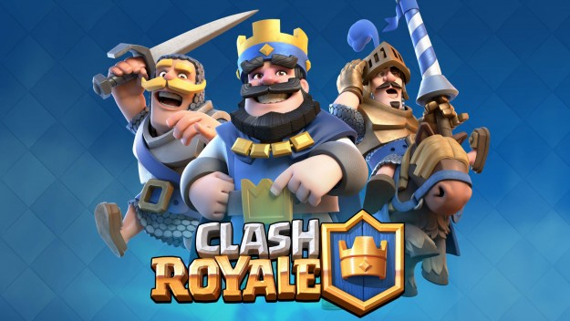
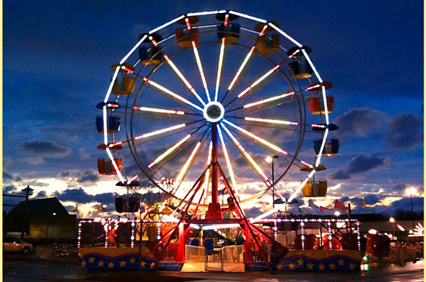
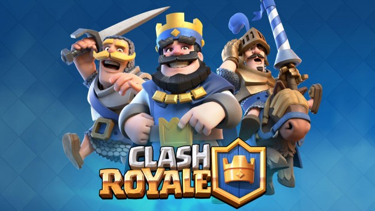
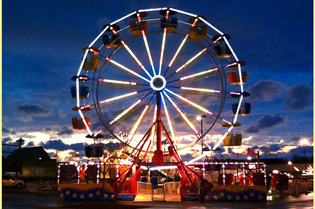

This summer I went to New York with my family, I spent two weeks there, It was really fun! I also played Clash Royale with my friends from Brazil every day.
I went to the carnival with me best friend and we had a lot of fun together! I also tried to make a website about fashion, I coded the website in “Code Writer”.
And in the end of August I moved from Boston to Worcester.
 


